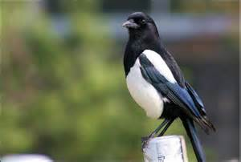

|
|
|
疑いが人の心に住みつくと
魂は苦渋を味わわねばならぬ
カササギのように入り混じった魂は
それでも天国と地獄の可能性を残している
不誠実な魂は黒一色にして
暗黒の色から離れられない
誠実で操の堅い人は白い色にして
日の光に照らされている
善と悪
美と醜
真と偽
生と死
これらはすべて白と黒によって象徴される
世界を織りなす人間模様。
この世界には白と黒が相対し、
中間の灰色の者もまた数多く存在する。
人は白を好み黒を忌み嫌う。
灰色の者でさえ良しとはされない。
白と黒と灰色の、まだら模様が織りなす現実世界を、
たくましく生きた人物の物語が、今、始まる。
第一章 ガムレット
アンショウヴェの国に
ガンディーンという王がいた。
フランスの広大な丘陵地帯を領有し、
国民から絶大な支持を受け、偉大な王として君臨していた。
ガンディーンは、剛勇の騎士であり
偉大な騎士マツァダーンの家系に属している。
この一族は偉大なる騎士の血筋であり、
これまでに多くの傑出した騎士を輩出してきた。
偉大なる騎士ガンディーン王には、
二人の息子がいた。
ガーローエスとガムレットである。
高き栄光に輝く一族にふさわしい、勇敢な若者だった。
ガンディーン王が槍試合で命を落したとき、
長子が全てを受けつぐという国の慣習にしたがい、
長子ガーローエスは、
全ての領土を相続した。
しかし、弟ガムレットを心から愛していたガーローエスは、
アンショウヴェの国の大半を、弟ガムレットに譲った。
居合わせた人々にも土地を分け与え、人々を喜ばせ、
ガーローエスは、寛大な王と呼ばれた。
ガムレットはアンショウヴェの国王となるはずだった。
しかし、ガムレットは、
一国を治めて安住するよりも、
諸国を遍歴し、武勇を試すことを望んだ。
ガムレットは兄ガーローエスに土地を返し、
そのかわりに、諸国を遍歴するための財産を要求した。
遍歴するためには、馬や馬具や甲冑の他に、
金銀財宝や夜具が必要だった。
ガムレットの母ショーエテは嘆いた。
「ガンディーンの息子よ。お前はもう私のそばにいてくれないのですか。
なぜ、戦いに行かなければならないのですか。
神は私を見捨てたとしか思えません。」
ガムレットは、言った。
「母上、騎士の戦いは私の定めです。
騎士の栄誉のために、見知らぬ国に出かけることは、運命です。
餞別をお与えください。」
ショーエテは言った。
「餞別は些少なものにはならないから、心配いりません。
いとしい息子よ。いつ戻ってくるのかを教えておくれ。
戻ってくる時を教えてくれたら、私は本当にうれしい。」
ガムレットは、言った。
「母上、どこの国へ行くのかもわかりません。
私がどこへ行こうとも、母上の愛情は忘れません。
どうか、これまで以上に兄を大切にしてください。」
若き王ガーローエスと皇太后ショーエテは、
遍歴に必要な品々を存分に与えた。
ガムレットを送り出す別れぎわに、
二人の頬は、涙で濡れていた。
ガムレットは、二十人の小姓をしたがえて、遍歴の旅に出た。
ガムレットのいでたちは、緑色の絹地アハマルディに
白い錨の紋章がほどこされていた。
馬具も緑色だった。
ガムレットは諸国を遍歴し、名声を博し、緑の騎士と呼ばれるようになった。
彼の噂を耳にした者は、決して彼に立ち向かうことはなかった。
果敢に一騎討ちを挑む者は、みじめな思いをするだけだった。
ガムレットに勝てるものは、どこにもいなかった。
緑の騎士ガムレットは、
東方に向かい、
やがてムーア人の王国ツツァマンクに着いた。
そこでは美しき女王ベラカーネが国を治めていた。
ムーア人は学問に長けていた。
フランス人よりも、
学問が進んでおり、
はるかに知的な雰囲気をただよわせていた。
しかし、ムーア人の肌は黒かった。
礼節を重んじるムーア人は、ガムレットを快く招き入れたが、
ガムレットは黒い肌が気に入らず、
早々にこの国から立ち去ろうと思った。
ガムレットは女王ベラカーネに接見した。
やはりベラカーネの肌も黒かった。
ベラカーネの黒い肌は、ガムレットにとって耐えられないものだった。
好意を持つどころか、不愉快な気がした。
それでも、
ベラカーネは誠実で知的で美しかった。
均整の取れた赤い唇からこぼれ出る言葉は
善意と優しさにあふれていた。
ガムレットは心を動かされて、もう一度ベラカーネを見ると、
いつの間にか、不愉快に感じていた黒い肌が魅力的に感じられ、
黒い肌に触れてみたいと思った。
それほどにベラカーネは美しかった。
さらに言葉をかわすうちに、ガムレットは恋に落ちた。
ガムレットに恋心があふれ、
ベラカーネへの思いが燃えたぎった。
ベラカーネの魅力がガムレットの心を打ったのだ。
ツツァマンクの現実は非常事態にあった。
ツツァマンクの城は、敵の軍勢に包囲されていた。
城壁の東側には、
野原一面に敵の白いテントが張られていた。
高貴な騎士イゼンハルトの死に対する報復のための包囲網だった。
イゼンハルトの盟友たちは、
彼の死は、女王ベラカーネの策略によるものだと思い、
ツツァマンクの城を攻めていたのである。
ガムレットはたずねた。
「彼らはなぜ、こんなにも激しくあなたを攻撃しているのですか。」
ベラカーネは言った。
「身分高く誠実な騎士イゼンハルトは、
私への愛を告白していました。
私と同じく肌の黒いムーア人です。
立派な方でした。
彼は私を愛してくださいましたし、
私も彼を愛していました。
でも、私は素直な女ではなかったのです。
彼はやさしく私に仕えてくださったのに、
私は愛の喜びで彼に報いてさし上げませんでした。
彼は私の愛を欲していたのに、
私は女性の恥じらいから、慎ましやかでいなければならないと思い、
彼をじらしたのです。
いたらない女です。
それで彼は、自分が勇士たらんことを見せようとして、
更なる武勇の誉れを得ようとしたのです。
その時、私は彼の愛が本当に私に向いているのかどうかを試そうと思いました。
そして、こう言ったのです。
『私のために、甲冑をはずして生身の体でいてください』と。
イゼンハルトは、騎士として最も誇り高き甲冑を
いとこのフリデブラントにあげてしまいました。
そして身の危険もかえりみず、
武具をつけずに
槍と楯だけをもって、
冒険の旅に出ました。
そこで偶然に、
彼は私の部下の騎士に出会ったのです。
二人は戦い、
お互いの槍でお互いの体を突きさしました。
あぁ、二人の死は、私の苦悩の源です。
今でも嘆き悲しんでいます。
それでもイゼンハルトの友人たちは、
私がイゼンハルトを倒すように命令したと思っているのです。
誤解です。
でも、きっとこの誤解は解けないでしょう。
彼らは力のある限り、私に復讐するでしょう。
どうか、あなたに武勇がおありなら、私を助けてください。」
ガムレットは話を聞き終わり、感動した。
ベラカーネの誠実さに心を動かされのだ。
ガムレットは言った。
「あなたの指図にしたがって、どこにでも戦いにまいります。」
ベラカーネはガムレットを見つめた。
ガムレットもベラカーネを見つめ、
二人の魂は触れあった。
そこには、すでに暗黙の約束が交わされていた。
翌朝、ガムレットは緑色の服をきて、甲冑を身につけ、
駿目に乗って戦場へ出ていった。
待ちうけていた敵の騎士を見つけると
全速力で走りだした。
敵もまた、
ガムレットに向かって、
全速力で走りだした。
そして互いの槍と槍が激突した。
敵の槍は折れて飛びちり
敵は草の上に落ちた。
ガムレットはすぐに馬を向けて
馬の蹄で敵を踏みつけた。
敵は言った。
「今まで、こんな目に合ったことはない。
私よりも偉大な強き者、
そなたの名前を聞かされたい。」
勝者ガムレットは答えた。
「アンショウヴェ出身のガムレットだ。」
敵は敗北を認め、称賛と尊敬の気持ちをこめて言った。
「忠誠を誓います。」
こうして、ガムレットは敵の軍勢の最も強き者をふくめ
次々と二十四人の騎士を倒した。
あっぱれだった。
誰もがガムレットの輝く戦いぶりに魅せられた。
戦いを終えて戻ってきたガムレットを
女王自らが出迎えた。
二人の間には、爽やかな微笑が交わされた。
愛と感謝と喜びの微笑である。
女王はガムレットの兜の紐をほどいてやり
甲冑をぬがせた。
歓喜の輪になっていた小姓や城伯らは、
手伝いたくても手を出せなかった。
女王はガムレットの手を引いて、部屋まで案内した。
女王は、ぞろぞろと二人に付いてきた小姓らに向かって言った。
「今日はあなたたちの役目はありません。
私が一人でお世話をしますので、さがってよろしい。」
二人が部屋に入ると、ドアが閉められ、
侍女らもさがった。
二人は豪華なベッドの中で、甘美な時を過ごした。
白い肌と黒い肌が混じり合い、一つになった。
こうして、ガムレットはツツァマンクの王となった。
翌日には、婚姻の宴が開かれ、
参列した全ての人が、愛と平和の訪れを喜んだ。
そして、しばらくの間、平穏な時が過ぎていった。
その後、
ベラカーネは子を宿した。
日に日に強くなるお腹の胎動を感じて、
ベラカーネは幸せだった。
しかし、一カ月が経った頃、
ガムレットは平穏な生活に飽き足らず、
父となることを憂い、
この国を出立することを決めた。
アンショウヴェの国を相続した時と同じく
一国を治めて安住するよりも、
諸国を遍歴し、武勇を試すことが、ガムレットの望みであった。
それが生きがいであり、また運命でもあった。
ガムレットは
残す妻に手紙をしたため、
夜中に舟を出し、
この国を去っていった。
翌朝、ベラカーネは手紙を見つけた。
「愛する妻よ。
私は静かに旅に出かける。
別れが辛いので、黙って出ていくことにする。
お前がもし、私が信じる神をうやまい、
私と信仰をともにしていたならば、
私はお前のもとを離れることはなかったのだ。
私たち二人の子が男の子であったなら、
きっと強い騎士になるだろう。
父はガムレット、祖父はガンディーンであることを伝えてくれ。
わが一族は高き栄光に輝いてきたのだ。
お前がもし、私が信じる神のもとで洗礼を受けるならば、
お前の胸に帰ってくることもあるだろう。」
ベラカーネの胸は悲しみでいっぱいになった。
「あぁ、あなたが望むなら
今すぐにでも洗礼をお受けいたします。
なぜ、なぜ行ってしまったのですか。
早くお戻りになられて、
再び、あのいとおしい愛の生活をお与えください。」
ベラカーネは悲しみと失意を味わいながらも、
わが子に出会えるという
一筋の希望をいだき、
時がたつのを待った。
そして、月が満ち、一人の男の子が生まれた。
この子の肌は、白と黒のまだら肌で
まるでカササギのようだった。
神が不思議を行われたのだ。
ガムレットの肌とベラカーネの肌が
白と黒となって現れたのである。
ベラカーネは赤子の肌の白い部分にキスをし、
ガムレットへの愛を、この子に注ぎこんだ。
男の子は、フェイレフィースと名づけられた。

|
|
|